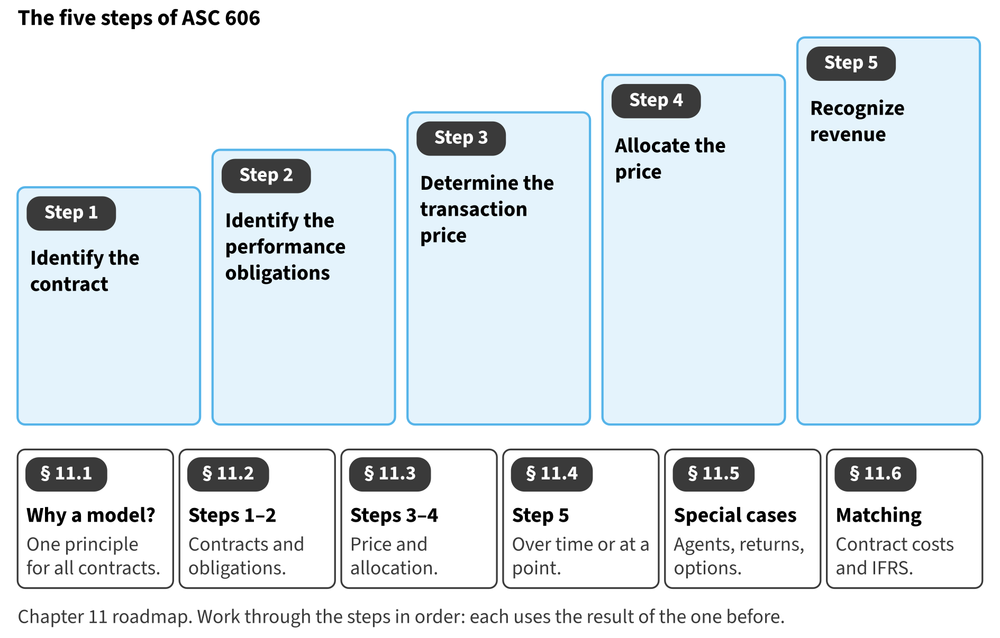

Part I · Foundations and the four financial statements · Chapter 11
Revenue Recognition
إثبات الإيراد
Revenue is the largest number on most income statements, and it is where many accounting problems begin. Chapter 3 showed Orontes's net sales for 2025. This chapter asks how Orontes decides when a sale becomes revenue, and how much.

Start here
Then
What this chapter is tested on
| LOS | Official statement (ICMA, 2024) | In plain words | Depth here |
|---|---|---|---|
| A.2.x | apply revenue recognition principles to various types of transactions | Apply the revenue recognition principles to common transactions, including agents, returns and consignments. | Full treatment |
| A.2.y | demonstrate an understanding of revenue recognition for contracts with customers using the steps required to recognize revenue | Use the five steps of ASC 606 to measure and time revenue from a contract with a customer. | Full treatment |
| A.2.z | demonstrate an understanding of the matching principle with respect to revenues and expenses, and be able to apply it to a specific situation | Apply the matching principle, including contract costs. | Full treatment |
| A.2.ff | identify and describe the following differences between U.S. GAAP and IFRS: (i) expense recognition, with respect to share-based payments and employee benefits; (ii) intangible assets, with respect to development costs and revaluation; (iii) inventories, with respect to costing methods, valuation, and write-downs (e.g., LIFO); (iv) leases, with respect to lessee operating and finance leases; (v) long-lived assets, with respect to revaluation, depreciation, and capitalization of borrowing costs; and (vi) impairment of assets, with respect to determination, calculation, and reversal of loss | State the main differences between ASC 606 and IFRS 15. | Preview (full in Chapter 17) |
The official statements are quoted from the ICMA Learning Outcome Statements (effective September 1, 2024). The plain-words column restates them in simpler English. The exam may test any outcome up to Level C.
What you already know
If you studied IFRS 15, you already know the five steps: the FASB and the IASB wrote the two standards together. The main differences are small, and Section 11.6 lists them. The words are the same too, so learn them exactly.
The 10 key terms
Every scene has Check Answers and Try Again. Try Again reshuffles rather than revealing. When you are wrong, the first thing you read is the reason for the option you chose, taken from the book's own explanations. Progress is saved in this browser.